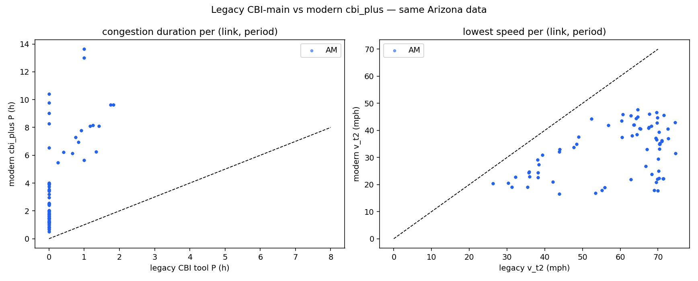
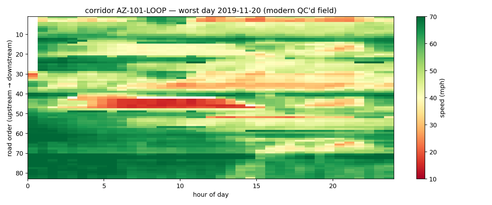

Rerun:
python reproduce_cbi_arizona.py (~15 min) — complete dataset in
data/ (Reading.csv.gz + TMC_Identification), legacy outputs in reference/.Agreement — legacy vs modern, per (link, period)
| period | n_links | n_congested_both | P_corr | P_mae_h | vt2_corr | vt2_mae |
|---|---|---|---|---|---|---|
| AM | 432 | 90 | 0.39 | 6.677 | 0.709 | 11.33 |
Read this as a cross-generation comparison, not exactness (LESSONS_LEARNED #11):
the lowest-speed agreement is strong (v_t2 r = 0.709) — both generations see the same bottlenecks —
while congestion-duration P correlates weakly (r = 0.39, MAE 6.7 h): the legacy tool's window and duration
conventions differ (its per-period P can span the analysis day; the modern scan is period-sliced with the
MD→PM merge, so only AM rows align label-for-label). The scanners' rule differences are the finding, and
demanding exactness across generations would freeze every improvement.
Figures

